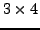
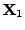
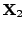
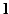

#include <gandalf/vision/affine34_fit.h>
Pose estimation is the procedure to compute the position of a camera relative
to a known scene. In projective terms it means estimating the 
homography matrix To start the calculation, define an accumulated symmetric matrix eigensystem structure and initialise it using the following routine:
Gan_SymMatEigenStruct SymEigen;
/* initialise eigensystem matrix */
gan_homog34_init ( &SymEigen );
Then for each point correspondence, build the equations 5.6
and increment the accumulated symmetric eigensystem matrix
by calling the following function:
int iEqCount=0, iCount;
Gan_Vector4 v4X; /* declare scene point X */
Gan_Vector3 v3x; /* declare image point x */
for ( iCount = 0; iCount < 100; iCount++ )
{
/* ... build scene and image point coordinates into X and x ... */
/* increment matrix using point correspondence */
gan_homog34_increment_p ( &SymEigen, &v4X, &v3x, 1.0, &iEqCount );
}
The fourth argument 1.0 is a weighting factor for the equations as
described in Section 3.2.2.15. The last argument iEqCount
is a running count of the total number of equations processed thus far,
to be passed below to the function to solve for Once the point correspondences have been processed in this way, you can solve the equations using
Gan_Matrix34 m34P; /* homography matrix P */
gan_homog34_solve ( &SymEigen, iEqCount, &m34P );
to compute the homography
gan_homog34_reset ( &SymEigen );
At the end of the homography calculation(s) you can free the eigensystem structure using the function
gan_homog34_free ( &SymEigen );
If line matches are available, and the endpoints of the 3D line are
approximately known, the line information can also be incorporated into
the calculation. Since the scene line will normally be created from previous
matching of image lines, which are line segments, the endpoints
 and  of the line in scene coordinates should indeed be
known. Note that we don't depend on locating the actual endpoints of the line
accurately, which is a notoriously difficult problem. You should think of
the two points and instead as representative
points on the line. We note that and should project
onto the image line , and so we obtain the equations
Gan_Vector4 v4X1, v4X2; /* declare scene line endpoints X1 & X2 */
Gan_Vector3 v3l; /* image line homogeneous coordinates l */
/* ... set X1, X2 and l for corresponding scene line and image line ... */
/* add equations for two endpoints */
gan_homog34_increment_le ( &SymEigen, &v4X1, &v3l, 1.0, &iEqCount );
gan_homog34_increment_le ( &SymEigen, &v4X2, &v3l, 1.0, &iEqCount );
Error detection: gan_homog34_init() returns a pointer to the initialised structure, and returns NULL on error. All the other routines except the void routine gan_homog34_free() return a boolean value, which is GAN_FALSE on error. The Gandalf error handler is invoked when an error occurs.